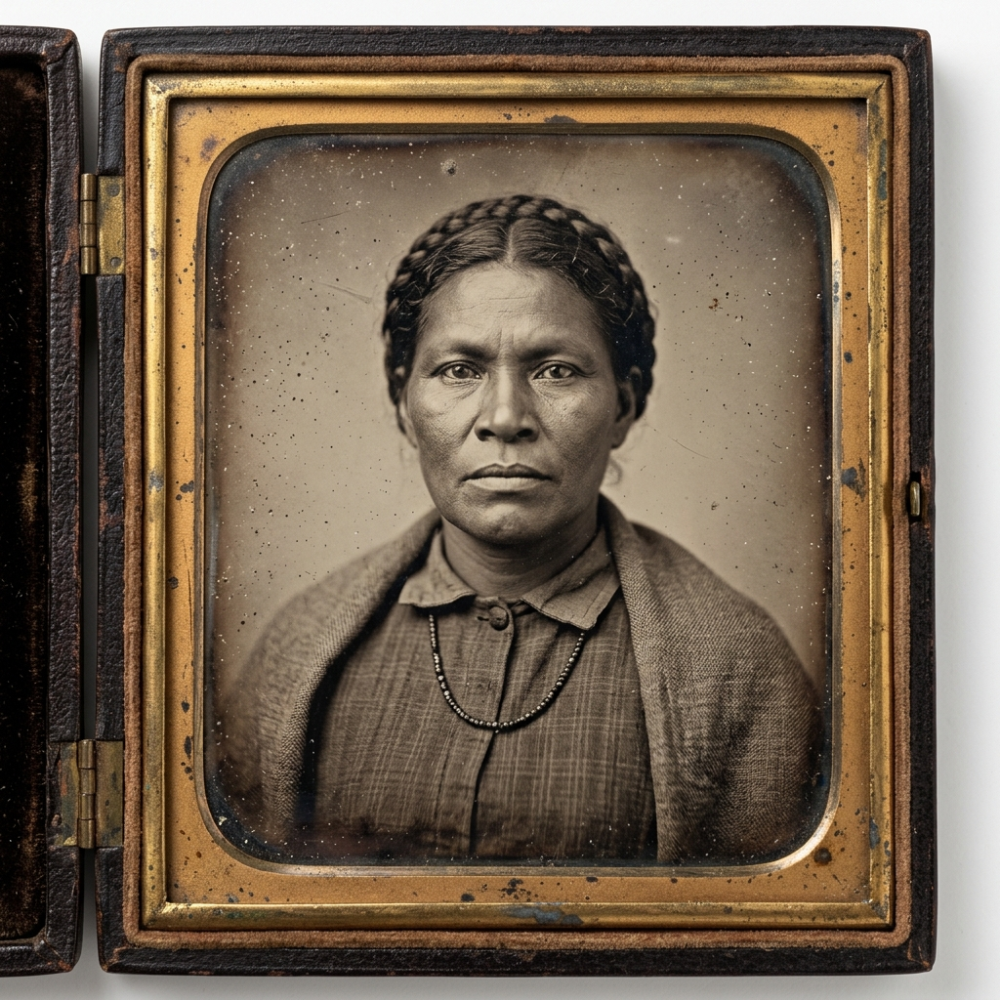
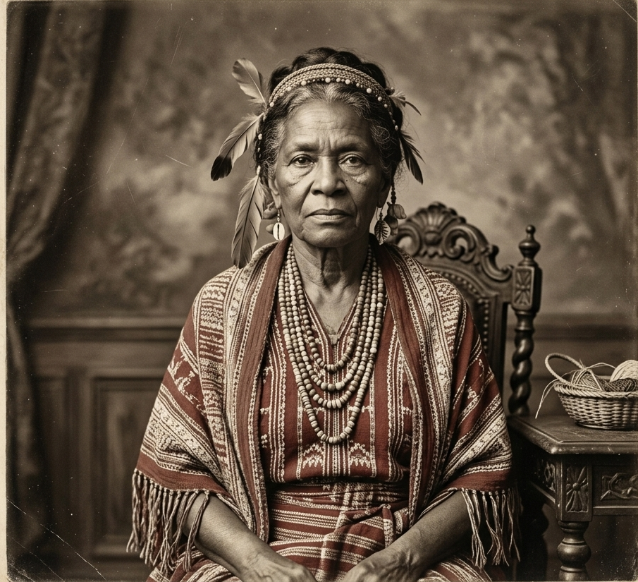
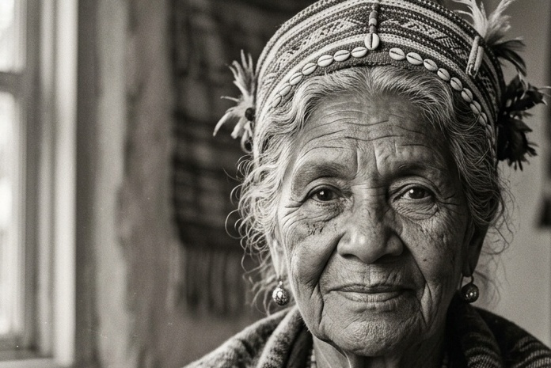
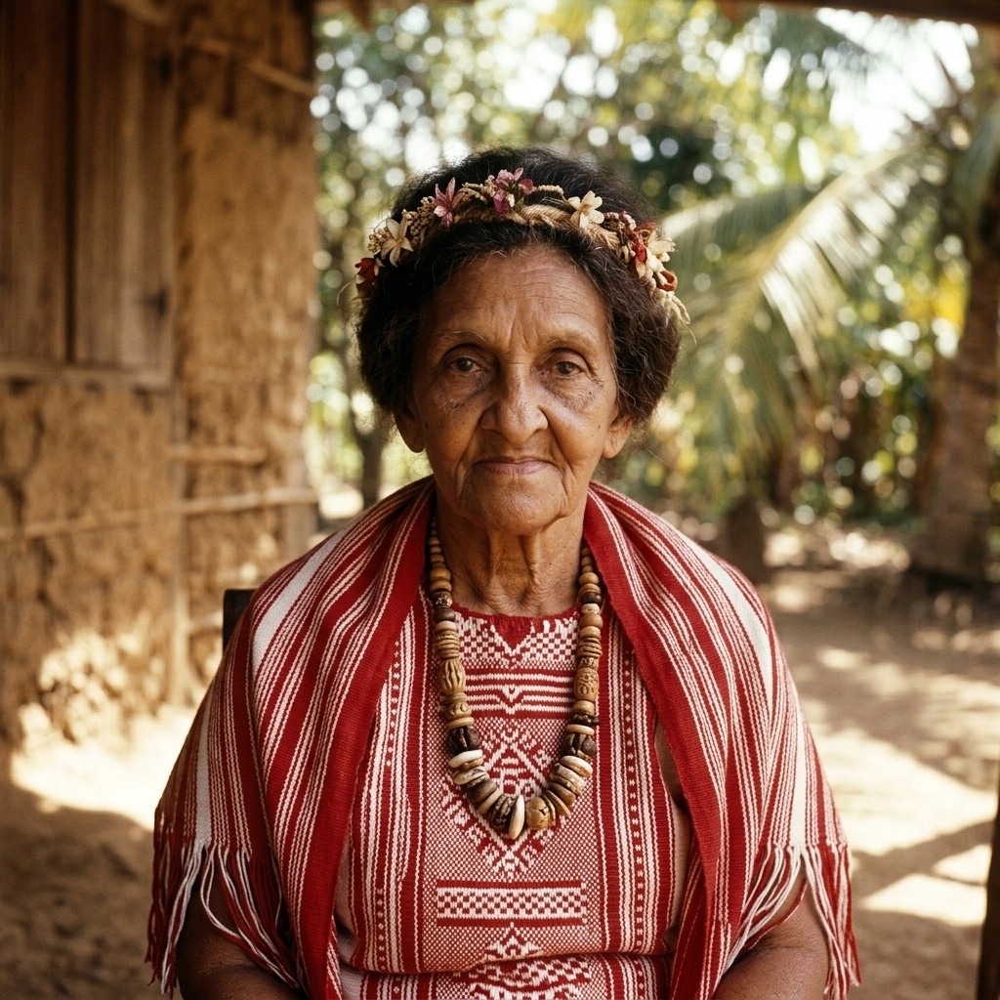
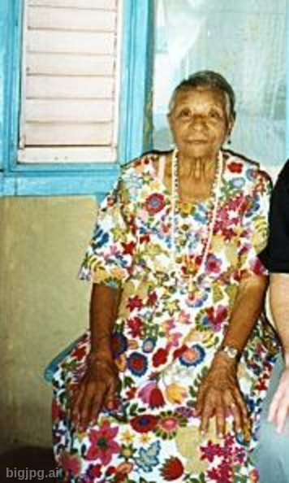
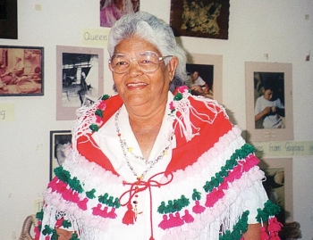
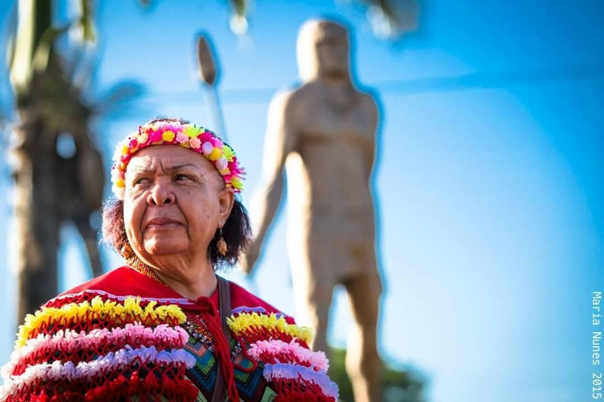
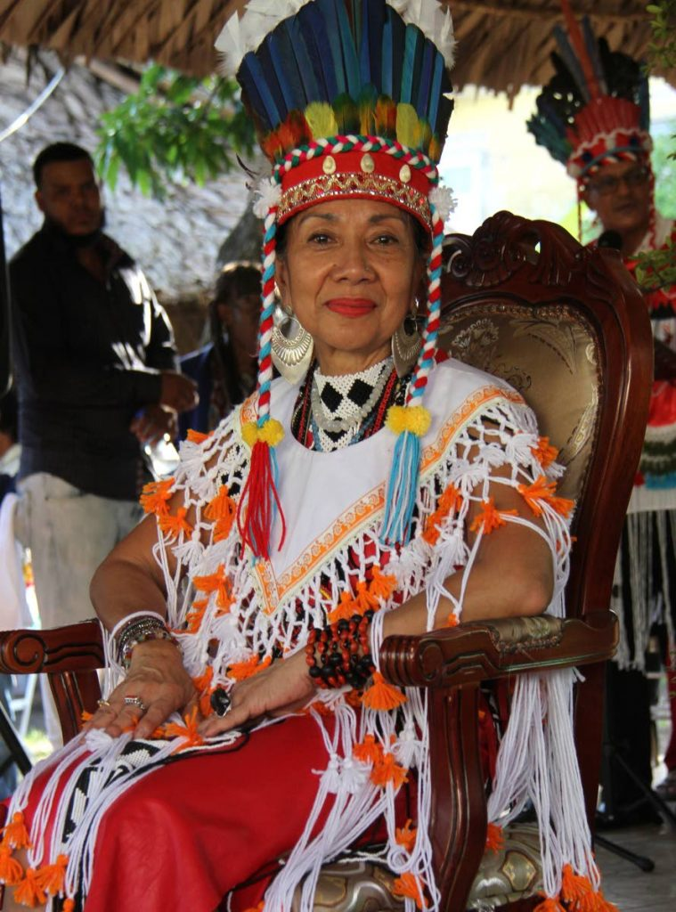

Origin & Historical Context
The institution of the Carib Queen of the Santa Rosa First Peoples Community in Arima is a highly respected, lifetime cultural role established in the 19th century. It represents an unbroken lineage of leadership and heritage preservation for Trinidad's indigenous descendants.
The Mission Context: Following the closure of the Spanish mission and reservation at Santa Rosa de Arima by the British in the early 1800s, Spanish Catholic priests remained on the island. In the mid-1800s, they collaborated with the community to establish a new leadership structure.
Female Lineage of Leadership: The missionaries rejected the reinstatement of a male chieftain (cacique) and instead sanctioned a line of female rulers. Out of profound respect and honor, the community addressed this leader as "Queen."
The "Carib" Identity: The term "Carib" in the title does not denote a single historical tribe. Rather, it serves as a collective designation representing all people of indigenous descent in Trinidad — ancestral descendants of a rich mix of Nepuyo, Lokono/Arawak, Chaima, Warao, and Kari'na peoples.

Roles, Duties & Sacred Succession
The Carib Queen holds supreme cultural and spiritual authority, serving as a beacon of unity, tradition, and diplomacy.
Keeper of Sacred Traditions
Chosen for her inherited knowledge of indigenous history, oral traditions, and traditional lifeways. This encompasses processing cassava using the sebucán, basketry, weaving tirite palms and mamuri vines, and mastering local medicinal flora.
Diplomatic Intermediary
Serves as the primary ambassador and intermediary between the Amerindian community and wider society, hosting foreign and national dignitaries, government leaders, mayors, and heads of state with dignity and protocol.
Santa Rosa Festival Leadership
Leads the planning and execution of the annual Santa Rosa Festival (celebrated every August since 1785/1786 — the island's oldest continuous festival). During festival week, the sacred statue of Santa Rosa is ceremonially housed in the Queen's home.
Tenure & Sacred Succession
The office is held for life. By tradition, an incumbent Queen nominates her successor, who is reviewed and approved by the Council of Elders. If a Queen passes away before naming a successor, the community elects her replacement.
Queen Nona Aquan in Celebration
Experience Carib Queen Nona López Aquan leading the Santa Rosa First Peoples Community through the streets of Arima alongside indigenous leaders from Trinidad and South America on First People Heritage Day.
Photo Credit: Roger Jacob for Trinidad and Tobago Newsday
Chronological Lineage of the Queens
Explore the history and achievements of the eight distinguished Carib Queens recorded in community and historical archives.

Francis Sorzano
Community documents record Francis Sorzano as the first Carib Queen, emerging during the transitional mission period in the 1830s following the closure of the Spanish reservation in Arima.
Her leadership laid the cornerstone for female matriarchal authority within the community.

Delores MacDavid
Inaugurated in 1875 as the first formally recognized Queen under the established title. Lacking formal schooling, she possessed immense wisdom and hosted regular cultural gatherings at her home.
She adeptly balanced Catholic Church expectations with the steadfast preservation of Amerindian heritage.

Maria Fuentes Werges Ojea
The longest-serving Queen in the community's history, spanning over five decades. She was deeply revered across Trinidad and Tobago for her spiritual gifts in traditional medicine and bush healing.
Her home became a haven of spiritual guidance and holistic remedies for people from all walks of life.

Edith Martinez
The second longest-serving Queen in community history, reigning for 25 years during Trinidad's transition into independence.
Highly prominent in modern memory, Queen Edith earned deep respect across all sectors of society for her grace, strength, and unwavering devotion to First Peoples culture.

Justa Werges
Queen Justa's reign saw monumental milestones for indigenous recognition, including the 1993 unveiling of the Hollis Avenue statue of Nepuyo warrior chieftain Hyarima in Arima.
Under her stewardship, the community was awarded the national Chaconia Medal (Silver) for outstanding community service and culture.

Valentina "Mavis" Medina
Elected following the passing of Queen Justa Werges, "Ma Mavis" viewed herself as a moral role model and spiritual advisor to the community.
She focused on mentoring youth, preserving sacred rituals, and instilling pride in Amerindian identity.

Photo Credit: Maria Nunes Photography
Jennifer Cassar
Inaugurated in August 2011, Queen Jennifer was a dedicated career civil servant and the first Carib Queen to hold a secular job in public service.
A tireless advocate, she successfully lobbied the national government to secure 25 acres of forest reserve land on Blanchisseuse Road for the model Amerindian Heritage Village and living museum.

Nona Aquan
Elected in May 2019, Queen Nona is a Trinidad-born fine arts graduate and caterer who spent years in New York City. She is a direct descendant of Pablo Lopez, the last recognized historic Carib Chief.
Queen Nona bridges deep ancestral lineage with a modern global perspective, advocating for indigenous rights, cultural arts, and community revival.
Photo Credits: Historical archive portraits and contemporary photography courtesy of the Santa Rosa First Peoples Community Council of Elders.